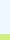
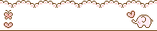
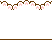

Footer CSS customization tutorial
★ 27 August 2025
I wouldn't fully call this a tutorial since the steps are not really specific. But here we go, this tutorial will help you on how to make a pretty footer so your site looks more colorful :]
How it would look like a.k.a the output
Step 1: Prepare a line or divider image that you think it could fit the rectangular bottom corners of the computer or phone screen. Keep in mind that the main/first image will be in the bottom center and the second image will repeat both sides (left & right), both are background images
Step 1.5: If you are stuck on finding the perfect images, use these. Make sure you read the end note
Step 2: I recommend using Photopea to crop out the second image. And if you want, you could crop out the first image to be fitting, as long as the second image aligns well with the first image
Step 3: Use these codes below. Click on the clipboard to copy and paste
footer {
background-image: url("SECOND IMG URL HERE");
background-repeat: repeat-x;
background-position: bottom;
width: 100%;
}
.main {
font-size: 1rem;
text-align: justify;
background-image: url("FIRST IMG URL HERE");
background-repeat: no-repeat;
background-position: center bottom;
height: 110px; /* Change it to fit with image's height */
}
.main p {
padding-left: 75px;
padding-top: 25px;
}
Put these 3 codes above inside the <style></style> tag or in your css file
<footer>
<div class="main">
<p>This is an example</p>
</div>
</footer>
Put this code inside the <body></body> tag
Step 4: Tweak the code to your liking so that it looks neatly and fit with your site
End note
Can't made this tutorial without the resources of Apupu material
Credits to Neko Atsume fanlisting for the inspiration
If you want more sample images from Apupu material to work with, here are some of them. You are free to use them as long as you link back to Apupu material site. Click to download!
 
scroll to top?